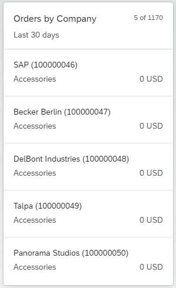
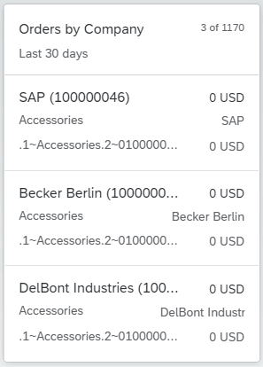
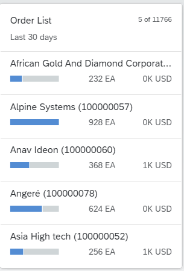
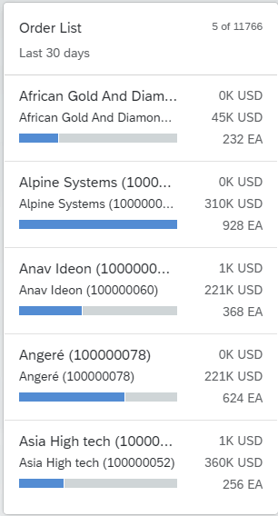

When creating a list card, you can choose from a number of different types of lists. The number of items displayed depends on the type of list. You can choose from two types of list cards:
Condensed
Extended
Standard
Bar
The com.sap.vocabularies.UI.v1.LineItem term can be configured in
the application manifest file by setting the annotationPath
property with a qualifier, as shown in the example below. If the
annotationPath property is not configured, the
com.sap.vocabularies.UI.v1.LineItem term, without a qualifier,
is used.
"sap.ovp": {
...
"cards": {
...
"card04": {
"model": "ZCD204_EPM_DEMO_SRV",
"template": "sap.ovp.cards.list",
"settings": {
"sortBy": "Price",
"sortOrder": "descending",
"listFlavor": "bar",
"annotationPath": "com.sap.vocabularies.UI.v1.LineItem#bar",
"category": "{{card04_category}}",
"entitySet": "Products"
}
},
...
}
}
In SAP Fiori elements for OData V4, add
sap.ovp.cards.v4.list as the template. All
other manifest settings are the same as in SAP Fiori
elements for OData V2.
By default, the fields in the list card are mapped to the
com.sap.vocabularies.UI.v1.LineItem annotation. Any other
collection of DataFieldAbstract can be used by setting the
annotationPath property. LineItem is a
collection of DataFieldAbstract records. You can use different
com.sap.vocabularies.UI.v1.LineItem annotations for different
card instances of the same entity type by using different qualifiers and setting the
annotationPath property with the qualifier in the card
configuration. For example
com.sap.vocabularies.UI.v1.LineItem#Qualifier1.
At runtime, the DataField records are sorted according to the
optional Importance (com.sap.vocabularies.UI.v1.ImportanceType)
annotation. DataField entries are sorted according to importance
and their order of entry.
DataField records are
displayed at the top left and bottom left of the list item. If there is a
DataFieldForAnnotation record that has a DataPoint
target, it is displayed at the top right of the list item, and its value can be
highlighted according to the criticality of the datapoint. If no
DataFieldForAnnotation record is defined, the next
DataField record is displayed instead.Number of list items displayed: up to 3.
In this type of list, each list item displays up to six fields. DataField
records are displayed on the left side of the line item, and
DataPoint records are displayed on the right. If no
DataPoint record is defined, or less than three
DataPoint records are available, the right side of the line
item displays DataField records instead.
Number of list items displayed: up to 6.
|
 |
 |
|
Condensed List Type - Standard Flavor |
Extended List Type - Standard Flavor |
In this type of list, each list item displays up to three fields. Only use this kind of list
if you want to display a DataPoint record. The first
DataField record is displayed as a title for the line item in
the top-left field. The first DataPoint record is displayed as a
bar beneath the title, and as a numeric value to the right of the bar. You can also
display an additional DataPoint record to the right of the first
DataPoint record. The bar can display values as a percentage or
as any numeric value.
Number of list items displayed: up to 3.
In this type of list, each list item displays up to five fields. The first
DataField record is displayed as a title for the line item in
the top-left field. An additional DataField record can be displayed
beneath the title. The first DataPoint record is displayed as a bar
beneath the DataField records, and as a numeric value to the right
of the bar at the bottom of the line item. You can also display two additional
DataPoint records to the right of line item, one above the
other.
If highlighting (criticality) is defined in the annotation of the DataPoint
records, only one will be highlighted in the line item according to the order in
which they are displayed.
Number of list items displayed: up to 5.
|
 |
 |
|
Condensed List Type - Bar Flavor |
Extended List Type - Bar Flavor |
To display images or icons in the condensed list card, set the property
”imageSupported": true, in the descriptor settings and
configure the DataField property in the LineItem
annotation. For
example:
<Annotation Term="com.sap.vocabularies.UI.v1.LineItem"> <Collection> <Record Type="com.sap.vocabularies.UI.v1.DataField"> <PropertyValue Property="IconUrl" Path="web_address"/> <PropertyValue Property="Value" Path="MaterialName"/> </Record> </Collection> <Annotation>
In list card, an image control is used instead of avatar. For more information, see Using Images, Initials, and Icons.